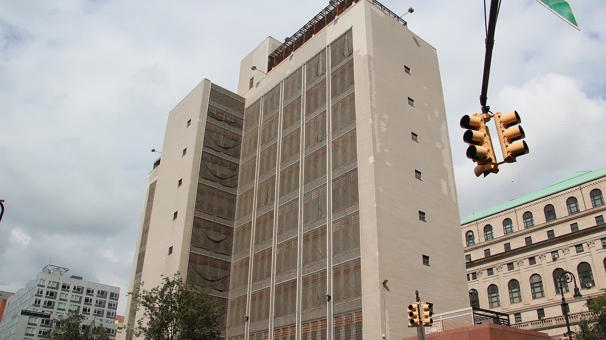
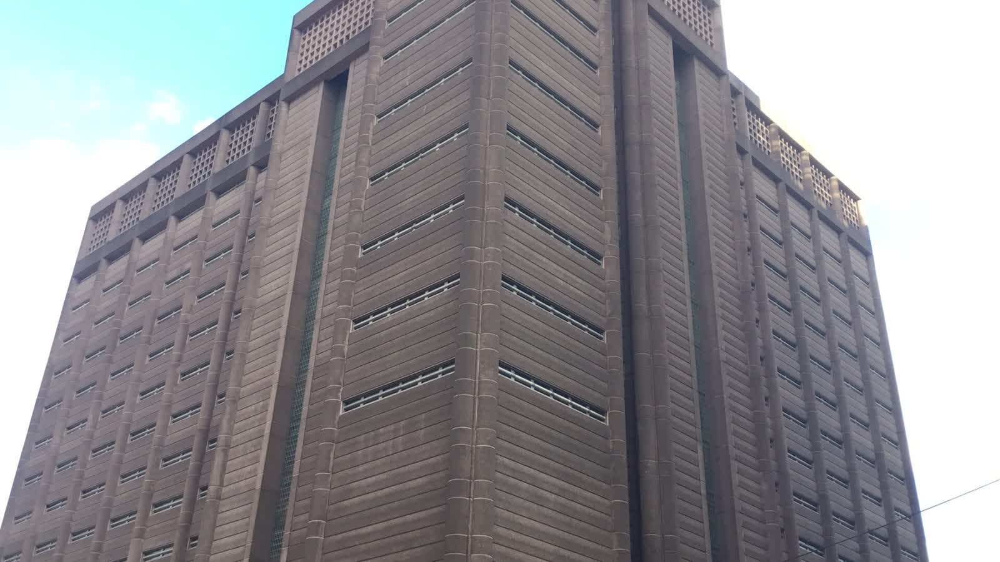
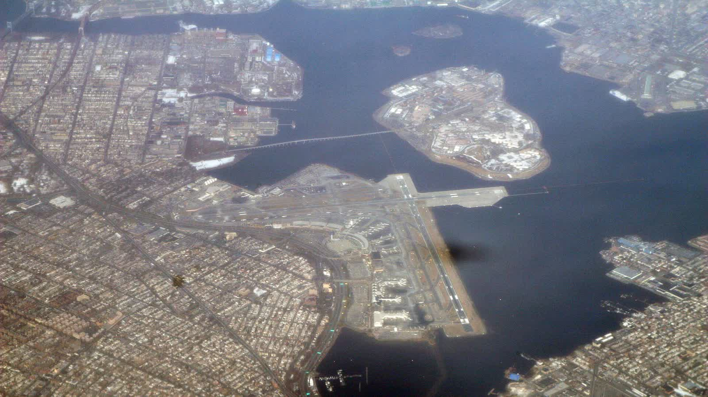

On Friday, Nov. 20, 2026, Mayor Zohran Mamdani released the city's plan to close the Rikers Island jail complex. The goal is to end all incarceration there and move the remaining jail population out by the end of 2032, The Guardian reports. A 2019 city law set August 2027. The mayor's office cannot change that date by itself, and The Guardian, citing Politico, says the City Council would have to pass a new law. Courtrooms decide who is held and for how long, so this plan is partly a court-process plan.
The date comes down to one comparison. The Guardian reports that roughly 6,600 people were held in jails on Rikers Island as of early November, and that the four new borough jails are expected to have about 4,500 beds. Closing Rikers means shrinking the first number below the second.
Watch it on YouTube
What was announced
According to The Guardian's reading of the plan and the mayor's release:
- The plan states that the Brooklyn jail is on track to open in 2029, the Bronx and Queens jails in 2031, and the Manhattan jail in 2032.
- The administration hopes to bring the number held on Rikers to no more than 5,500 when the Brooklyn jail opens, and to no more than 4,100 by the end of 2032.
- It includes hundreds of therapeutic beds for people with serious mental health conditions and complex medical needs.
- It commits $146 million from the city next fiscal year. The Guardian reports three amounts from the plan and release: $50 million for vocational training, education, counseling and substance use services, $76 million for community-based services such as reentry and diversion programs, including supportive housing, and $16 million for crime victims and survivors. Those three total $142 million. The Guardian does not say what the other $4 million covers.
- It says the city will restore its online bail payment portal in 2027. The release says the portal has been unavailable since 2023.
- It also covers pretrial detention and case delays, and the Department of Correction.
The mayor's statement says the plan reduces pretrial detention and tackles "the case delays that deprive people of their right to a speedy trial." Council Speaker Julie Menin said delays under previous administrations show more time is needed.
People held on Rikers: now, and the plan's ceilings
Next fiscal year, as The Guardian reports the plan and the mayor's release
$50M
vocational training, education, counseling and substance use services
$76M
community-based services, such as reentry and diversion programs, including supportive housing
$16M
support for crime victims and survivors
These three total $142 million. The plan's headline figure is $146 million, and The Guardian does not say what the other $4 million covers.
Two of the four boroughs, today.
The plan replaces Rikers with a jail in each of Brooklyn, the Bronx, Queens and Manhattan. These are the existing complexes in Brooklyn and Manhattan, not the new buildings.


The Guardian's own photographs are licensed to that outlet and are not reproduced here. They are in its report.
The count that decides the date
The Guardian's figures are about Rikers and are not the same measure as the city's daily jail count, which covers everyone in Department of Correction custody, wherever they are held. We do not combine them.
In the Department of Correction's daily feed, which Case Analytica read Nov. 20, 2026 (agency data last updated Nov. 19), 6,644 people were in custody. Of those, 5,703 carry status code DE. The agency's field description says the status code records, for example, whether a person is a detainee. That is 5,703 of 6,644, about 86 percent, by our division. The other codes are 514 CS, 274 DEP, 66 DNS, 50 SSR, 19 CSP and 18 DPV.
Most are held while a case is open.
Each gold dot is about one percent of the people in city jail custody who carry status code DE. Each grey dot is about one percent with another code.
NYC Department of Correction, Daily Inmates In Custody (NYC Open Data 7479-ugqb), read Nov. 20, 2026; agency data last updated Nov. 19. The dots are rounded: 5,703 of 6,644 is about 86 percent. The agency does not define the codes on its data page; we read DE as detainee from its field description.
The agency's data page does not spell out what each code means. We read DE as detainees, people held while their case is open, from that field description. The Department of Correction can confirm it.
If most of the people counted are held while their cases are open, then what moves the number down is what happens in those cases: bail decisions, how fast cases move, and who is released to programs in the community. The plan names two of those, pretrial detention and case delays, but the reporting does not say how it will cut them or by when.
The Guardian, citing Politico, says the City Council would have to pass
A new law.
What the plan does not settle
- The date. The 2027 date is law. Moving it needs a vote.
- The number. The 4,100 target depends on people leaving custody faster than they enter. The plan states the goal; The Guardian's report does not give the steps.
- The buildings. The Guardian reports that construction is behind schedule and that the city's jail population has risen since 2020.
- What we did not read. We have not read the plan document. Everything above about the plan comes from The Guardian's report of it and the mayor's release as The Guardian describes it.

The plan counts people.
Photo: Doc Searls, Wikimedia Commons, CC BY 2.0 (2010). Darkened and cropped.
Where lawmakers come in
The 2027 date is a City Council law, so a new date is a City Council vote. Case Analytica's lawmakers tracker covers New York State justice bills: who sponsors and cosponsors each one and how senators voted, from the state's own record. It does not rate anyone. It does not yet cover the City Council.
The exact question to ask
If you or someone you love is held at Rikers while a case is open, ask the attorney: "What is the next court date, and what has to happen before release is possible?" The plan counts people. Your case is the part the plan cannot answer.
A note on images: this article includes no photograph of any person. The photographs are of places, are openly licensed, and are credited under each image. The Guardian's and AP's photographs are not reproduced.